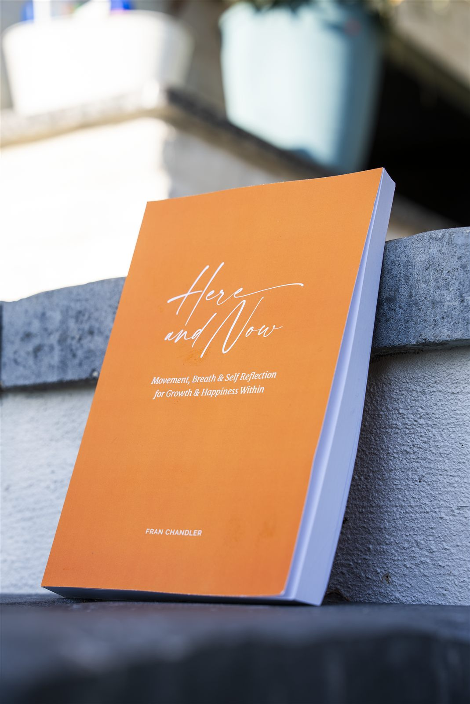
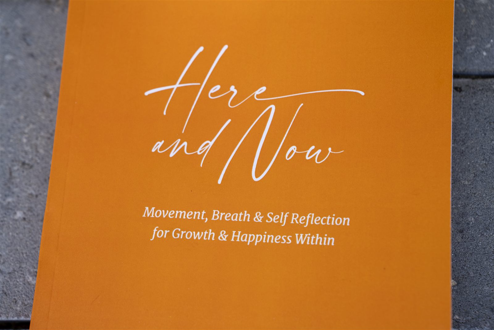

The flagship
Here and Now
Movement, breath, and self-reflection for growth and happiness within.
$19.91
Get the JournalAbout the journal
A slow, seven-month practice
Here and Now is a seven-month guided journal built around the seven chakras — the energy centers that, in a tradition much older than most wellness trends, shape how grounded, creative, confident, connected, honest, intuitive, and whole we feel. Fran Chandler, a health coach, meditation teacher, and yoga instructor, wrote it after years of watching students try to rush their own healing. This book asks you to do the opposite.
Each of the seven chapters is built around one chakra and given a full month. Inside every chapter you'll find gentle yoga sequences to move the body, a chakra-focused meditation to settle the mind, and journaling prompts written to go somewhere real — not just "how was your day." The three work together on purpose. Movement opens something words can't reach on their own; meditation gives you room to notice it; writing gives it a place to land.
You don't need a yoga mat worn thin or years of meditation practice to start. The pacing is built for someone new to all of this, with enough depth that longtime practitioners find new footing too. Fran designed each month to stand on its own, so if life gets busy and you fall behind, there's no page to catch up on — just the next one, whenever you're ready for it.
That slowness is the whole design. Seven months is a long time by workbook standards, and that's deliberate. Quick fixes rarely hold. This one is built for the kind of change that's still there a year later — a little more grounded, a little more expressive, a little more at ease with yourself.
Inside the book
Seven chapters, one for each month
Every chapter pairs the same three tools — movement, meditation, and journaling — around a single chakra.
Month 1
Root chakra
The root chakra is your foundation — the sense of safety and stability everything else is built on. This month's practices are slow and grounding: poses that keep you close to the floor, meditations on feeling supported, and prompts that ask what "safe" actually feels like in your body, not just your head.
Month 2
Sacral chakra
Located just below the navel, the sacral chakra governs creativity, emotion, and pleasure. Month two loosens things up — more fluid movement, meditations that make room for feeling instead of managing it, and prompts that get curious about what you actually enjoy, without apologizing for it.
Month 3
Solar plexus chakra
This is the seat of personal power and willpower. The third month works with core-engaging poses and meditations built around confidence — not performance, but the quieter kind that doesn't need an audience. The prompts push gently on where you've been shrinking yourself to keep the peace.
Month 4
Heart chakra
The heart chakra is about love and connection, starting with the relationship you have with yourself. Expect heart-opening poses, meditations on compassion, and prompts that look honestly at where you've been generous with others and stingy with yourself.
Month 5
Throat chakra
Governing expression and communication, the throat chakra asks you to say the true thing, not just the easy thing. Month five pairs poses that release tension in the neck and shoulders with meditations on honesty, and prompts that help you rehearse conversations you've been avoiding.
Month 6
Third eye chakra
The third eye is associated with intuition and inner vision — the part of you that knows things before you can explain why. This month slows down even further: quiet, seated practices, meditations built around noticing rather than deciding, and prompts that trust your gut over your spreadsheet.
Month 7
Crown chakra
The crown chakra represents spiritual connection and a sense of belonging to something larger than yourself. The final month is reflective by design — gentle closing sequences, meditations on interconnection, and prompts that look back across all seven months to notice what's actually changed.
From readers
What people are finding
"I almost skipped the Root Chakra month because it felt too simple. Turns out that was the point — I still go back to those first pages when things feel unsteady."Amazon reader
"By month three I noticed I'd stopped apologizing before I asked for what I needed. Small thing. Didn't expect a journal to do that."Amazon reader
"I'm not a journaling person. The prompts are short enough that I actually finish them, which is new for me."Amazon reader
"Did the Throat Chakra month during a really quiet stretch at work. Helped me say two things out loud I'd been sitting on for months."Amazon reader